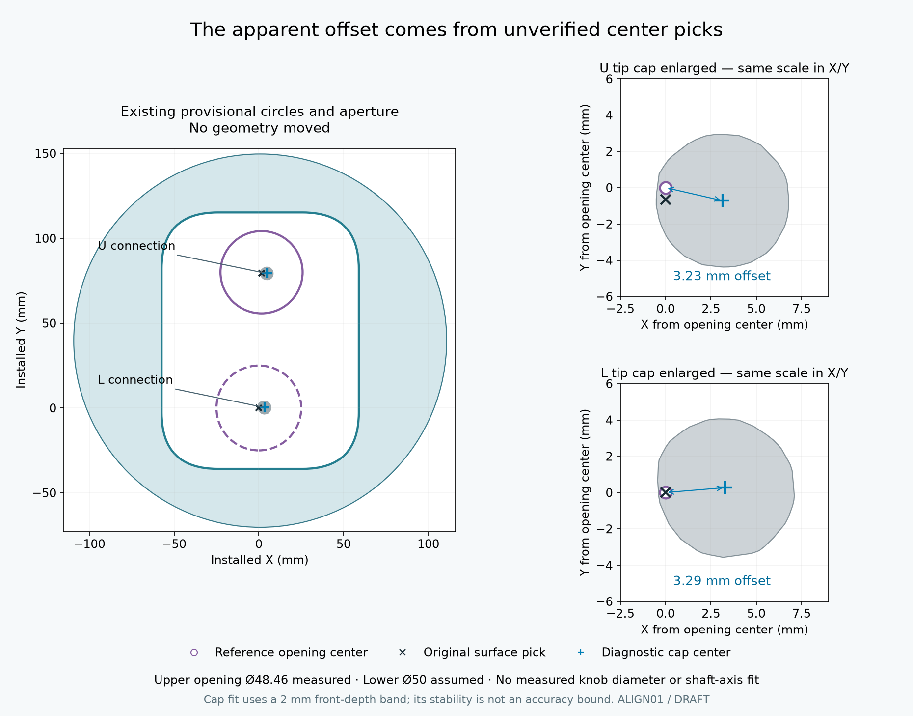
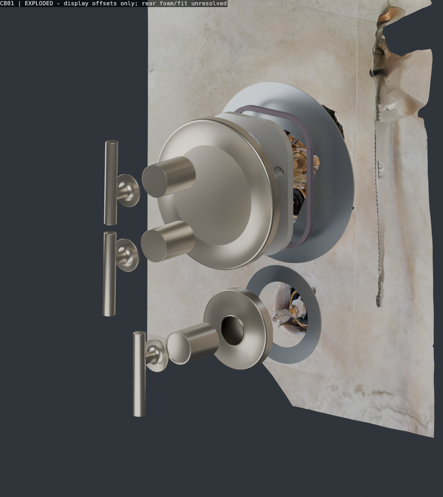
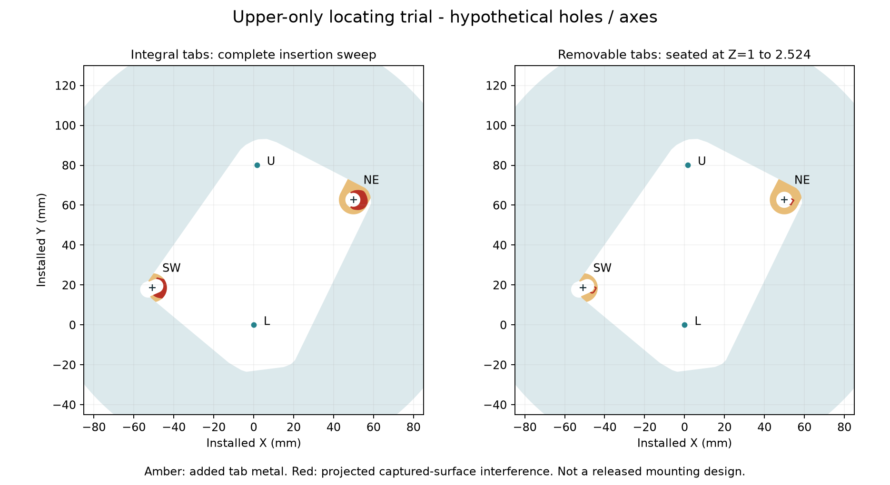

Correction: the stored U/L points are not verified shaft centers
The off-center appearance is real in the reconstruction. Both original landmarks sit near the left edge of the captured tip caps. A separate cap-outline fit places the apparent centers about 3.1–3.4 mm farther right. This is a scan-based diagnostic, not a measured alignment correction.

Purple circles: inner-plate openings, not knob diameters. Upper Ø48.46 is measured; lower Ø50 remains assumed. Black ×: original surface pick. Blue +: provisional tip-cap center. Circles and CAD have not been moved to force a match.
Your observation that the knobs look about as wide as the inner-plate openings is retained qualitatively; no knob diameter has been accepted. Where a part actually crosses an opening at the same depth, the radial allowance is (opening diameter − passing-part diameter) / 2, and center offset consumes that allowance. Similar diameters can therefore leave very little freedom for misalignment. The critical rear profile must be identified; the visible knob diameter alone does not establish what passes through each plane.
Fit remains unresolved in both centering and depth. L's reference circle was centered on the old pick by construction. U's reference-circle center is 0.647 mm above its old pick. Those small coordinate differences do not establish physical concentricity. The new cap fit suggests roughly 3.2–3.3 mm offsets from the displayed circles.
A real assembly needs each stem, adapter and handle mating axis aligned. The rigid factory plate must register to both controls and studs together. Moving the plate alone could lose the current nominal 1 mm foam-side land; moving the whole trim/backing arrangement would require fresh wall-coverage and diverter-spacing checks. Do not turn this discrepancy into a machining tolerance or independently move the two factory holes.
The custom backing has one large upright aperture. Its existing geometric clearance results apply to the old provisional placement only. The small circles are factory-opening references, not additional holes in the custom cutting files. Actual centering, rear connection clearance and axial engagement require the real factory parts and a thickness-correct dry fit.
Recomputed offsets, cap-fit sensitivity and limitations · Kohler assembly sequence, pp. 7–8
Updated: upright opening and handle access
The foam meets the removed inner plate's outer edge; rear rod contact with wood is confirmed by the user. AP01 compares a centered upright opening against the old diagonal contour, with full upper-opening footprints and a separate engagement/depth check.
Open the updated access comparison and dry-fit CAD. Historical CB01/LOC01 drawings and quote files below still use the diagonal aperture; do not use them as the AP01 cutting design.
A constant border around each cover
Two concentric alternatives on your captured travertine, using official Kohler exterior CAD. Each backing outline shares its cover's inferred center, with zero intentional offset.
DRAFT - NOT FOR FABRICATION. Cover centers, rear foam, hardware depth, support and physical fit remain unresolved. The old F005 offset/rectangular appearances do not satisfy the recorded constant-border requirement. These new options are unselected.
Blueprints and fit notes1:1 A3 templatesBlender workspaceReveal the top gouges and over-cuts
What the smaller outlines change
Both cover the traced damage at the current model scale. They leave less margin than the offset F005 shapes and both fall below the earlier exploratory 10 mm main-land target. A projected margin does not establish sound support or a watertight landing.
The insertion aperture is unchanged in installed coordinates. The original scan and captured hardware are preserved. Appearance views hide the captured hardware in a separate cosmetic wall copy; the Blender Observed layer retains it.
Exploded assembly

From the wall: unresolved support/seal detail, custom backing plate, factory foam and inner plate, factory nuts, decorative cover, adapters and handles. Display offsets are not installed depths. The pink foam footprint is still hypothetical.
Before choosing a metal part
Trace both rear foam edges on the template; check actual cover centers and equal exposure; reconcile stud diameter, axes and projection with the real plate and cover cavity. Then dry-fit the selected thickness with the factory parts and verify support, drainage, handle engagement and removal.
SS060 is 1.524 mm; SS125 is 3.175 mm; PROTO3 is 3 mm. The 3 mm trial is 1.476 mm thicker than SS060 and 0.175 mm thinner than SS125, so it cannot prove either metal depth stack without a thickness-correct check.
Six new center readings are preserved separately. Their fitted estimates have not silently replaced the R005/F005 placements used here. Read the reconciliation.
Your caliper readings include depth
Landmark correction: the U/L scan picks used below are tip-surface points near the cap edges, not verified end-tip centers. These older reconciliation calculations are retained as historical diagnostics. Read the center audit before using them for fit or scale.
The six readings are confirmed 3D end-tip-center distances. Their projection into the tile plane is shorter when the two tips have different depths: dXY = √(d3D² − ΔZ²).
Using the current scan depths gives the conditional reductions below. These are illustrations, not accepted hole spacings; stud inclination also affects the centers at the plate plane.
| Pair | Raw 3D | Scan ΔZ | Conditional XY | Reduction |
|---|
| U-L | 80.000 | 1.447 | 79.987 | 0.013 |
| NE-SW | 109.800 | 4.065 | 109.725 | 0.075 |
| U-NE | 51.400 | 1.278 | 51.384 | 0.016 |
| L-NE | 80.250 | 2.725 | 80.204 | 0.046 |
| U-SW | 81.140 | 5.343 | 80.964 | 0.176 |
| L-SW | 54.700 | 6.790 | 54.277 | 0.423 |
All values in mm. The extra decimals support calculation review and do not establish accuracy.
When depth is allowed to vary, all six readings fit a 3D arrangement exactly. They do not determine its orientation or depth relative to the wall. Both mirror branches are kept as diagnostic estimates; the older fixed-scan-depth trial remains separate.
Measurement uncertainty, assembly clearance, machining tolerance and sealing support are separate requirements. The depth correction and fit residuals are not machining tolerances. See the depth diagram on sheet 11.
Upper-only screw-locating alternative

The new trial adds metal around one round clearance hole and one slot, using the fixed-scan-depth reconciled tip-center state. It intersects the unchanged scanned stud regions, so it is retained as a diagnostic model while actual stud axes, diameters, nut bearing and cover depth are reconciled. This is a source/model conflict, not proof that the physical idea is impossible. Free-depth fits are retained separately and have not been substituted for hole coordinates.
Threaded engagement is unselected; the thread and engagement are unknown. Removable bridges could change the insertion sequence, but their seated clearance and retention still need resolution. Hole clearance alone does not guarantee centering on the actual cover.
Locator collision analysis · Separate fitted model state · Diagnostic upper STEP · Diagnostic upper STL. This trial is excluded from the quote packages.
Coverage calculations · CAD hashes and stock checks · Saved Blender checks · Historical F005 research and diagnostics. No files uploaded or orders placed. Quote ZIPs contain only the selected custom pair, clean cut files, drawings and notes.